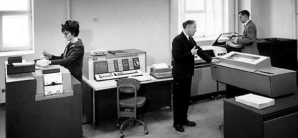

IBM 1620 Emulator –
Hosting Site Home
This site hosts the current version of the retro-1620 emulator, an implementation of the IBM 1620
Model 2 computer system that runs in a web browser.

Main Links
- 1620 Emulator Home Page
The home page from which you can start the emulator.
Please see the Getting Started
and Using the Control Panel
wiki pages for information on setting up and running the emulator before trying to start it from the home page.
- Project Wiki
Documentation to assist you in setting up and operating the emulator.
- Open Source Project
Source code, documentation, and other resources for the retro-g15 emulator project at GitHub.
- Project Blog
Blog devoted to this and other computer emulation projects.
- IBM 1620 Documents at bitsavers.org
A collection of scanned copies of original Bendix manuals and other reference materials for the G-15 system. This project would not have been possible without the availability of these materials.
Like this? Check out these emulators:
Burroughs B5500 •
Burroughs 220 •
ElectroData 205 •
Bendix G-15
Revised
2022-11-04